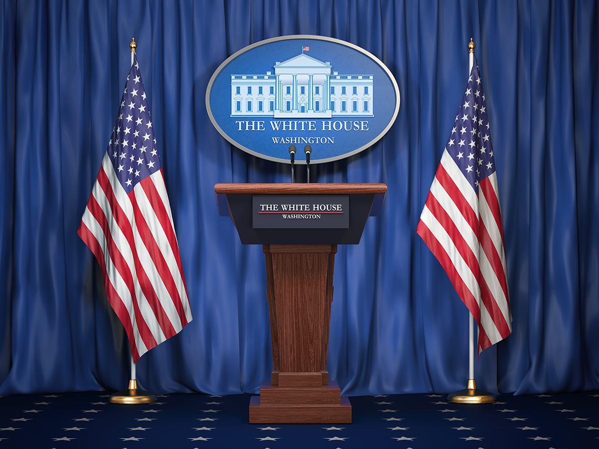

When people think about the American government or are asked about the government, they usually bring up the president. In many ways, this notoriety is warranted—the president is, after all, an elected official whose constituents include all Americans. However, the president serves not only as a figurehead but also plays many roles at the same time.

First and foremost, think about the term executive in the executive branch. To execute means to carry out. In the case of the American government, the executive branch carries out and enforces laws passed by the legislative branch, which is Congress. Presidents also have power beyond carrying out laws, which you’ll learn more about later. At this time in history, presidential power has been on the rise as Congress has ceded authority in areas related to foreign affairs and the military in particular. This situation can change and has changed in the past, but for now, the president still plays a significant role in the American government.
Today, over four million federal employees serve in a role related to the executive branch. Presidents appoint over 500 high-level positions and over 2,500 lower-level positions. The size, scope, and responsibilities of those jobs, from forest rangers to the Secretary of State, create a vast organization that the president must manage.
Like the leaders of any large organization, presidents delegate responsibilities to people they can rely on because, as Truman voiced, the buck stops with the president. Press to the next page to learn about the president’s Cabinet, the leaders to whom the president delegates the responsibility of running departments that the president manages.